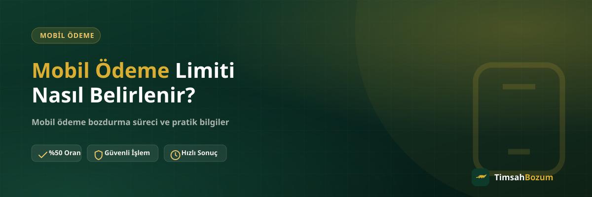

Bozum yapmak için mobil ödeme hattı kullananların çoğu, elindeki limitin nereden geldiğini hiç sorgulamaz. Oysa bu limit rastgele bir sayı değil, operatörün hattınla ilgili topladığı bilgilere göre şekillenen bir sonuç. Bu yazıda limitin hangi kriterlere göre oluştuğunu, kimin belirlediğini ve bu bilginin bozum işlemiyle nasıl bir ilişkisi olduğunu açıklıyoruz.
Mobil Ödeme Limiti Nedir, Neden Var?
Mobil ödeme, bir uygulama veya oyun içi satın alma yaptığında tutarın anlık olarak kontör bakiyenden değil, ay sonundaki faturana yansıtıldığı bir ödeme yöntemi. Operatör bu şekilde sana geçici bir ödeme kolaylığı tanımış oluyor; ama bu kolaylığı sınırsız vermiyor, çünkü henüz tahsil etmediği bir tutar için risk üstleniyor. İşte bu riski yönetmek için her hatta bir üst harcama sınırı, yani mobil ödeme limiti tanımlanıyor.
Limiti Operatör Hangi Verilerle Hesaplar?
Limit belirleme süreci tamamen operatörün kendi iç sistemine ait; TimsahBozum bu hesaplamada bir rol oynamıyor, biz yalnızca oluşan bakiyeyi bozdurma hizmeti sunuyoruz. Yine de üç operatörde de tekrar eden ortak bir mantık var: sistem, hattın davranışını bir tür güven puanı gibi değerlendiriyor. Bu değerlendirmede öne çıkan başlıca etkenler şöyle:
- Hattın faturalı ya da faturasız oluşu: mobil ödeme, faturalı hatlarda genellikle daha geniş bir limitle tanımlanır; faturasız (ön ödemeli) hatlarda özelliğin kendisi kısıtlı ya da kapalı olabilir.
- Hattın ne kadar süredir aktif olduğu: yeni açılmış bir hat için operatörün elinde henüz bir geçmiş verisi yoktur, bu yüzden başlangıç limiti düşük tutulur ya da özellik geçici olarak kapalı gelir.
- Geçmiş fatura ödeme düzeni: faturaların zamanında ve düzenli ödenmesi, operatörün gözünde hattı daha güvenilir kılan en somut sinyaldir.
- Mobil ödemenin fiilen kullanılıp kullanılmadığı: hiç kullanılmamış bir özellikte sistemin değerlendirebileceği bir davranış verisi olmadığı için limit kendiliğinden yükselmez.
Bu kriterlerin ağırlığı ve hesaplama yöntemi operatörden operatöre farklılık gösterebilir ve dışarıya açıklanmaz; dolayısıyla kendi hattın için en güncel ve kesin bilgiyi yalnızca ilgili operatörün kendisinden alabilirsin.
Yeni Açılan Bir Hatta Limit Neden Düşük Başlar?
Bir hat ilk kez açıldığında operatörün elinde o numarayla ilgili herhangi bir ödeme geçmişi bulunmaz. Risk değerlendirmesi geçmiş veriye dayandığı için, sistem temkinli davranıp düşük bir limitle başlar ya da mobil ödemeyi başlangıçta tamamen kapalı tutar. Zaman içinde hat aktif kaldıkça ve faturalar düzenli ödendikçe bu değerlendirme yeniden yapılabilir.
Faturalı ve Faturasız Hatlarda Belirleme Mantığı Aynı mı?
Hayır, temelden farklı. Faturasız hatlarda ödeme genelde önceden yüklenen kontör üzerinden yürüdüğü için, operatörün "sonradan tahsil edilecek" bir tutar riski üstlenmesi söz konusu değildir; bu yüzden mobil ödeme bu hat türünde daha kısıtlı sunulur. Faturalı hatlarda ise operatör harcamayı önce karşılıyor, tutarı sonra faturaya yansıtıyor; bu da limit belirlemeyi bir kredi değerlendirmesine benzer hale getiriyor.
Limit Zamanla Kendiliğinden Değişir mi?
Evet, limit sabit bir rakam değil; operatör hat geçmişini periyodik olarak yeniden değerlendirebilir. Düzenli ödeme, hat kıdeminin artması ve mobil ödemenin küçük tutarlarla kullanılmaya devam etmesi genellikle limitin zamanla yükselmesine katkı sağlar. Buna karşılık geciken faturalar veya olağan dışı ani harcama sıçramaları, operatörün limiti düşürmesine ya da özelliği geçici olarak kısıtlamasına yol açabilir.
Limitimi Nereden Görebilirim?
Güncel limitini görmenin en sağlıklı yolu operatörünün kendi mobil uygulaması; bu bilgi genellikle ana ekranda ya da "Faturam / Kullanımım" bölümünde yer alır. Uygulamada net bir rakam görünmüyorsa bu, limitin sıfır olduğu anlamına gelmez, çoğu zaman özelliğin hatta henüz açılmadığını gösterir. Operatöre özel adımlar için Vodafone, Türk Telekom ve Turkcell sayfalarımıza bakabilirsin.
Limit Belirleme Süreci Bozum Tutarını Nasıl Etkiler?
Limit ile bozdurabileceğin tutar aynı kavram değil, sık karıştırılan iki farklı şey. Limit operatörün hattına tanıdığı üst harcama sınırıdır; bozum işleminde bozdurulan tutar ise o an hattında fiilen oluşmuş mobil ödeme bakiyesidir. Yüksek bir limitin belirlenmiş olması otomatik olarak yüksek bir bakiyen olduğu anlamına gelmez, bakiye ancak bir harcama yapıldığında ortaya çıkar. Bozum işlemine başlamadan önce güncel bakiyeni operatör uygulamandan kontrol etmen, işlemin hangi tutar üzerinden yürüyeceğini netleştirir.
Limit Belirlenirken Sık Yapılan Yanlış Varsayımlar
Bazı kullanıcılar limitin tek seferlik ve değişmez bir kural olduğunu düşünür, oysa yukarıda anlatıldığı gibi bu bir değerlendirme sürecidir ve zamanla güncellenir. Bir diğer yaygın yanlış varsayım, limitin tüm operatörlerde aynı formülle hesaplandığıdır; oysa her operatör kendi iç kriterlerini uygular ve bu kriterler dışarıya açıklanmaz. Üçüncü bir yanlış algı ise limitin bozum işlemiyle doğrudan operatör tarafından ilişkilendirildiği düşüncesidir; oysa limit belirleme tamamen operatörün kendi sistemine ait bir süreçtir, bozum ise bu süreçten bağımsız olarak oluşan bakiye üzerinden yürür.
Limit Belirleme Sürecinde TimsahBozum'un Rolü Nedir?
Açıkça belirtmek gerekirse: TimsahBozum limit belirleme, artırma veya kısıtlama süreçlerinin hiçbirine dahil değildir. Bu tamamen operatör ile hat sahibi arasındaki bir ilişkidir. Bizim rolümüz, hattında zaten oluşmuş mobil ödeme bakiyesini güncel oranlar üzerinden nakde çevirmektir. Güncel bozdurma oranı sitede genel referans olarak yer alır, işlem öncesi güncel oranı WhatsApp'tan teyit etmek en doğrusu.
Sık Sorulan Sorular
İlgili Yazılar
- Mobil Ödeme Limiti Nasıl Artırılır?
- Mobil Ödeme Limitim Neden Kapalı, Nasıl Açılır?
- Mobil Ödeme Limit Bozum Nedir? Limitin Tamamı Bozdurulur mu?
Mobil ödeme bakiyeni nakde çevirmek istiyorsan, güncel oranı teyit etmek ve işlemi başlatmak için WhatsApp hattımıza yazabilirsin.